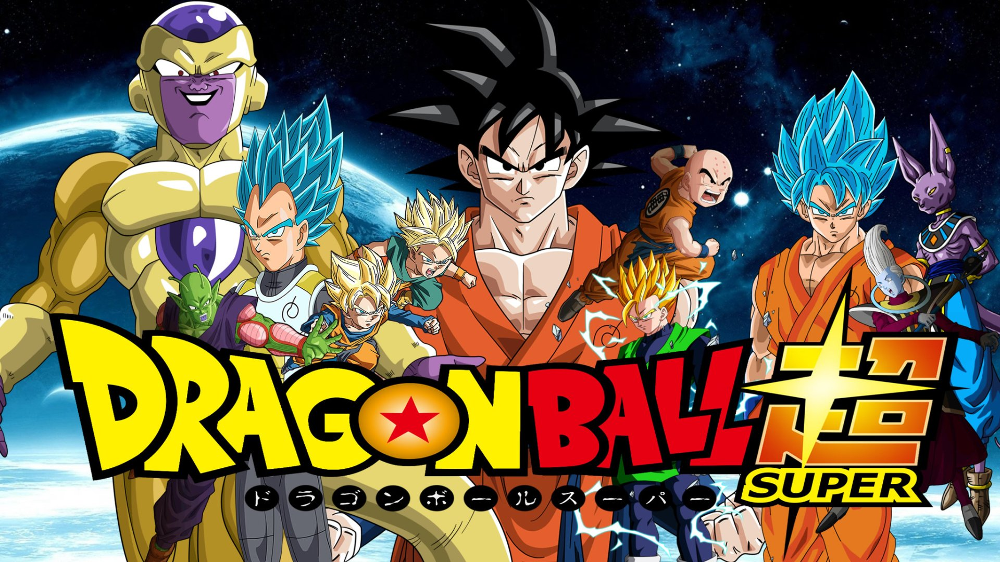
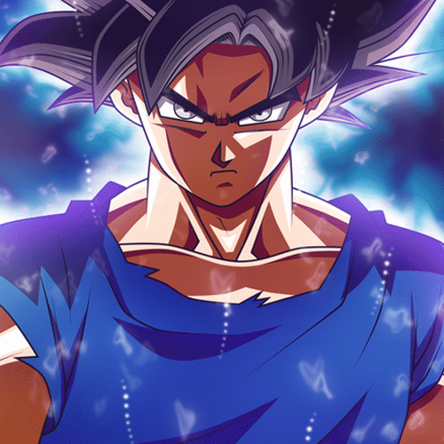
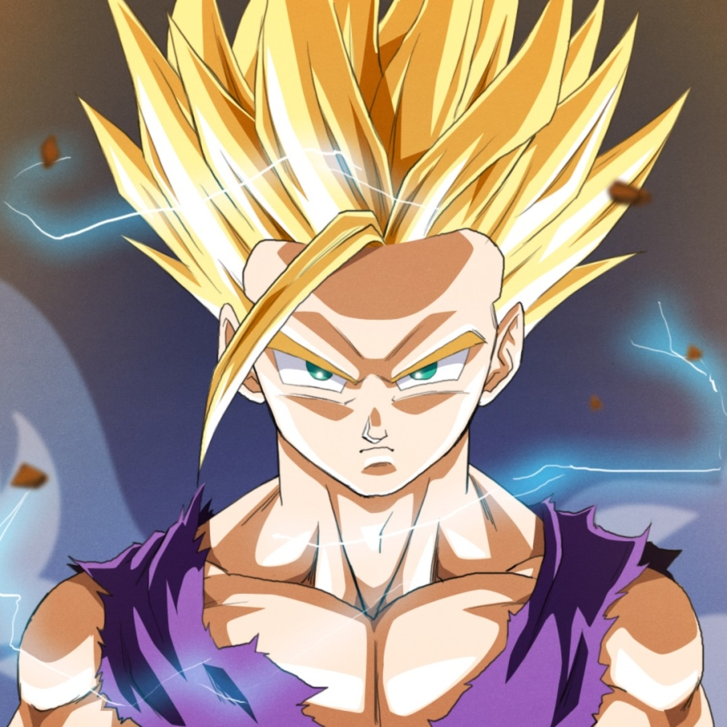
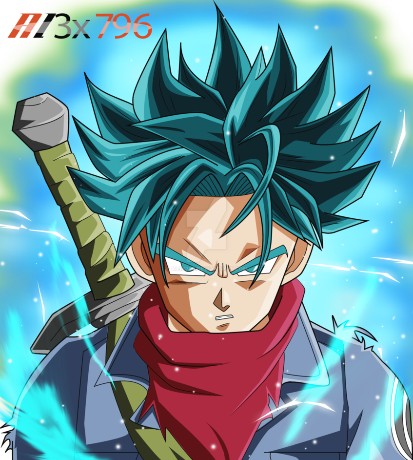
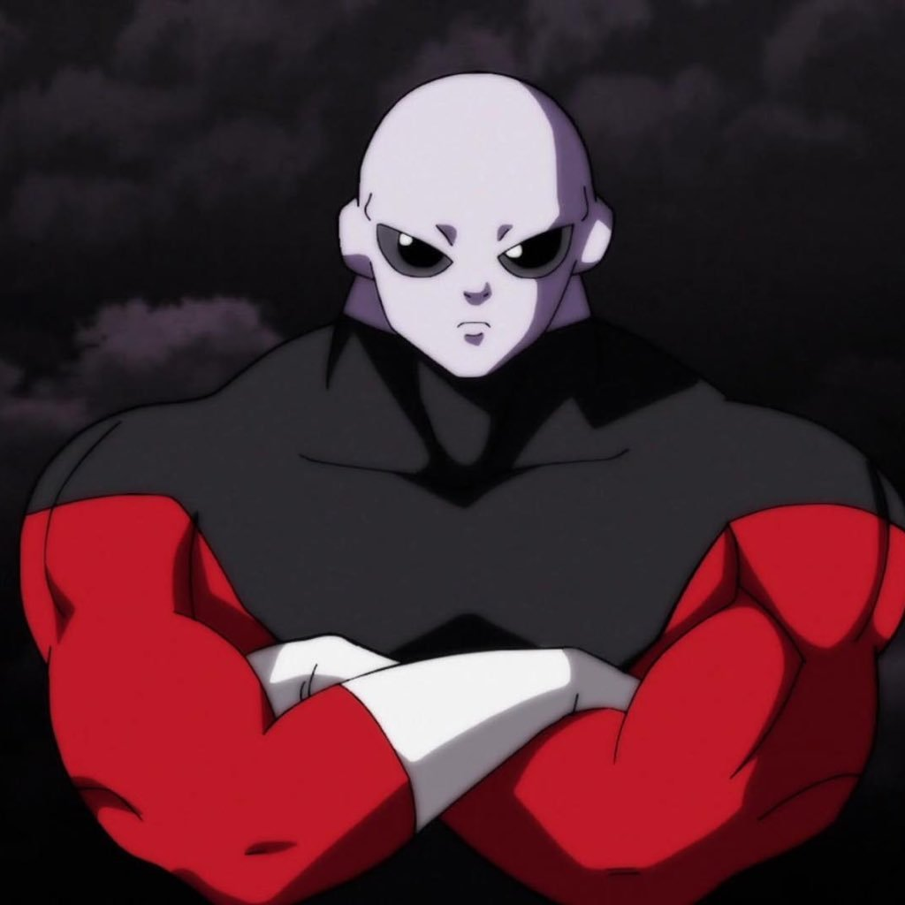

DRAGON BALL SUPER

SONGOKU
Songoku,tên khai sinh là Kakarot là nhân vật chính trong bộ truyện tranh
Bảy viên ngọc rồng hay Dragon Ball của Akira Toriyama. Cậu là cháu
trai nuôi của Ông nội Gohan, chồng của Chi-Chi, ba
của Gohan và Goten, ông nội của Pan và trong Dragon Ball GT là cụ cố của Goku Jr.
VEGETA
Vegeta là một nhân vật trong bộ truyện tranh manga Dragon Ball Z, Dragon Ball GT và Dragon
Ball Super. Anh được tạo ra bởi tác giả Akira Toriyama Anh là chồng của Bulma, cha của Trunks và Bulla, và
anh trai của Tarble. Anh cũng là hoàng tử của tộc người Saiyan. Ngoài Son Goku, Son Gohan, và Piccolo, anh là một
trong những nhân vật nổi bật nhất trong bộ truyện tranh này. Vegeta luôn coi Goku là đối thủ lớn nhất của mình.
VÀ CÁC DIỄN VIÊN KHÁC

SOGOHAN
SOGOHAN là một nhân vật hư cấu trong Dragon Ball. Được tạo ra bởi Akira Toriyama. Là
con trai cả của Goku và Chi-Chi, anh trai của Son Goten, và là người Saiya lai Trái Đất đầu
tiên. Cậu được đặt tên theo tên của ông nuôi Goku (Đại thánh Son Gohan).

TRUNKS
là một nhân vật hư cấu trong truyện tranh Dragon Ball, và anime Dragon Ball Z và Dragon
Ball GT. Là con người lai Saiyan với Trái Đất. Trong tiếng Anh Dubs của Budokai và loạt Budokai
Tenkaichi video game, Trunks được gọi là Kid Trunks, để phân biệt với các đối tác trong tương lai của mình thay thế.
THẦN HỦY DIỆT BERRUS

JIREN
FRIEZA
TOBE CONTINUE

.png)